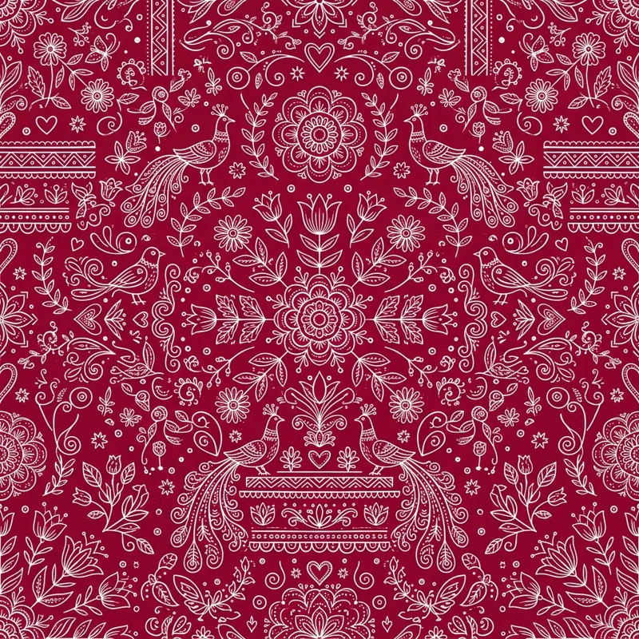

Preserving ancestral skills by translating Aipan geometries onto modern products, creating sustainable livelihood for women.
Kumaon Aipan Art is an initiative designed to solve a pressing issue: the economic displacement of rural women in the Himalayan hills. Aipan has traditionally been a domestic ritualistic art form drawn on floors during ceremonies. We identified that these same beautiful designs can enrich daily-use items, such as mugs, stoles, notebooks, and coasters.
By conducting continuous training camps in villages across Nainital and Almora, we organize self-help artisan circles. We supply the raw eco-friendly materials and handle the digital distribution, returning the majority of proceeds directly to the women who painted them.
Our aesthetic focuses on clean layouts, terracotta tones, and precise line details, providing a contemporary feel that complements modern lifestyle spaces.

Active Women Artisans earning stable, independent monthly incomes.
Training workshops organized to pass down Aipan patterns to younger generations.
Products shipped across India, sharing Himalayan traditions globally.
Meet some of the talented self-taught women painting the Aipan products you love.
"Teaching younger girls the art of Biswar lines and helping them earn their first salary is the most satisfying experience of my life."
"Aipan has always been a hobby. Being part of Kumaon Art has allowed me to turn it into a proud profession from my home."
"Applying traditional layouts to cloth stoles requires extreme focus. Seeing people wear our art is a matter of great pride."